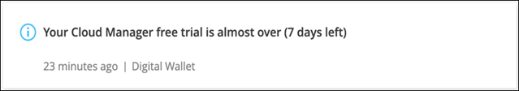

Amazon Web Services에서 직접 지원합니다
Amazon Web Services에서 직접 지원합니다
 Google 클라우드
Google 클라우드
 Microsoft Azure를 참조하십시오
Microsoft Azure를 참조하십시오
 문서 변경 요청
문서 변경 요청 이 페이지 편집
이 페이지 편집 기여하는 방법 자세히 알아보기
기여하는 방법 자세히 알아보기Cloud Volumes ONTAP 라이센스
Cloud Volumes ONTAP에는 몇 가지 라이센스 옵션이 있습니다. 각 옵션을 사용하여 요구사항에 맞는 소비 모델을 선택할 수 있습니다.
라이센스 개요
신규 고객은 다음과 같은 라이선스 옵션을 사용할 수 있습니다.
- 용량 기반 라이센스
-
프로비저닝된 용량을 기준으로 NetApp 계정의 여러 Cloud Volumes ONTAP 시스템에 대한 비용 지불 애드온 클라우드 데이터 서비스를 구매할 수 있는 기능이 포함되어 있습니다.
- 유연한 Keystone 구독
-
HA 쌍에 대한 원활한 하이브리드 클라우드 경험을 제공하는 용량제 구독 기반 서비스입니다.
이전 by-node 라이센스 모델은 이미 라이선스를 구입했거나 현재 마켓플레이스 서브스크립션을 보유하고 있는 기존 고객에게도 계속 사용할 수 있습니다.
다음 섹션에서는 이러한 각 옵션에 대해 자세히 설명합니다.
용량 기반 라이센스
용량 기반 라이센스 패키지를 사용하여 Cloud Volumes ONTAP/TiB 용량 단위로 비용을 지불할 수 있습니다. 라이센스는 NetApp 계정에 연결되며, 라이센스를 통해 사용할 수 있는 용량이 충분한 경우 라이센스에 대해 여러 시스템을 청구할 수 있습니다.
예를 들어, 20TiB 라이센스 1개를 구입하고 Cloud Volumes ONTAP 시스템 4개를 배포한 다음 각 시스템에 5TiB 볼륨을 할당하여 총 20TiB를 할당할 수 있습니다. 용량은 해당 계정에 구축된 각 Cloud Volumes ONTAP 시스템의 볼륨에 사용할 수 있습니다.
용량 기반 라이센스는 package 형식으로 제공됩니다. Cloud Volumes ONTAP 시스템을 구축할 때 비즈니스 요구 사항에 따라 여러 라이센스 패키지 중에서 선택할 수 있습니다.
패키지
Cloud Volumes ONTAP에 사용할 수 있는 용량 기반 패키지는 다음과 같습니다.
프리모늄
NetApp에서 무료로 모든 Cloud Volumes ONTAP 기능을 제공합니다(클라우드 공급자 요금은 여전히 적용됨).
-
라이센스 또는 계약이 필요하지 않습니다.
-
NetApp의 지원은 포함되지 않습니다.
-
Cloud Volumes ONTAP 시스템당 프로비저닝된 용량 500GiB로 제한됩니다.
-
모든 클라우드 공급자가 NetApp 계정 하나당 Freemium 제품을 사용하면 최대 10대의 Cloud Volumes ONTAP 시스템을 사용할 수 있습니다.
-
Cloud Volumes ONTAP 시스템에 대해 프로비저닝된 용량이 500GiB를 초과하면 Cloud Manager가 시스템을 Essentials 패키지로 변환합니다.
시스템이 Essentials 패키지로 변환되는 즉시, 가 표시됩니다 최소 충전 적용됩니다.
프로비저닝된 용량이 500GiB 미만인 다른 모든 시스템은 Freemium에 그대로 유지됩니다(Freemium 제품을 사용하여 구축한 경우).
필수 요소
다양한 구성의 Cloud Volumes ONTAP에 대한 용량 기준 지불
-
Cloud Volumes ONTAP 구성 선택:
-
단일 노드 또는 HA 시스템
-
DR(재해 복구)을 위한 파일 및 블록 스토리지 또는 보조 데이터
-
-
NetApp의 클라우드 데이터 서비스를 추가 비용으로 이용할 수 있습니다
전문가입니다
무제한 백업을 통해 모든 유형의 Cloud Volumes ONTAP 구성에 대한 용량별 지불.
-
모든 Cloud Volumes ONTAP 구성에 대한 라이센스를 제공합니다
동일한 속도로 운영 및 2차 볼륨의 용량을 충전하는 단일 노드 또는 HA
-
클라우드 백업을 사용한 무제한 볼륨 백업을 포함하지만 프로페셔널 패키지와 함께 배포된 Cloud Volumes ONTAP 시스템에만 포함됩니다
-
NetApp의 클라우드 데이터 서비스를 추가 비용으로 이용할 수 있습니다
소비 모델
용량 기반 라이센스 패키지는 다음 소비 모델에서 사용할 수 있습니다.
-
* BYOL *: NetApp에서 구입한 라이센스로 클라우드 공급자에 상관없이 Cloud Volumes ONTAP를 구축할 수 있습니다.
-
* PAYGO *: 클라우드 공급자 마켓플레이스의 시간별 구독입니다.
-
* 연간 *: 클라우드 공급자 마켓플레이스로부터 연간 계약을 체결합니다.
다음 사항에 유의하십시오.
-
NetApp(BYOL)에서 라이센스를 구입하는 경우 클라우드 공급자 마켓플레이스의 PAYGO 오퍼링을 구독해야 합니다.
라이센스는 항상 먼저 부과되지만 다음과 같은 경우 마켓플레이스의 시간당 요율로 비용이 청구됩니다.
-
라이센스 용량을 초과하는 경우
-
라이센스 기간이 만료된 경우
-
-
마켓플레이스로부터 연간 계약을 체결한 경우 _ All_Cloud Volumes ONTAP 시스템에 해당 계약이 적용됩니다. BYOL은 연간 마켓플레이스 계약을 혼합하여 사용할 수 없습니다.
가격
가격에 대한 자세한 내용은 를 참조하십시오 "NetApp Cloud Central에서".
무료 평가판
클라우드 공급자 마켓플레이스의 용량제 구독을 통해 30일 무료 평가판을 사용할 수 있습니다. 무료 평가판에 Cloud Volumes ONTAP 및 클라우드 백업이 포함되어 있습니다. 이 평가판은 사용자가 마켓플레이스의 서비스에 가입할 때 시작됩니다.
인스턴스 또는 용량 제한은 없습니다. 원하는 만큼 Cloud Volumes ONTAP 시스템을 구축하고 30일 동안 무료로 필요한 용량을 할당할 수 있습니다. 무료 평가판은 30일 후에 자동으로 유료 시간별 구독으로 변환됩니다.
Cloud Volumes ONTAP에는 시간당 소프트웨어 라이센스 비용이 부과되지 않지만, 클라우드 공급자의 인프라 비용이 여전히 적용됩니다.

|
무료 평가판이 시작될 때, 7일 남았습니다. 1일이 남았을 때, Cloud Manager에서 알림을 받게 됩니다. 예를 들면 다음과 같습니다. |
지원되는 구성
용량 기반 라이센스 패키지는 Cloud Volumes ONTAP 9.7 이상에서 사용할 수 있습니다.
용량 제한
이 라이센스 모델을 통해 각 개별 Cloud Volumes ONTAP 시스템은 디스크를 통해 최대 2개의 PiB 용량을 지원하고 오브젝트 스토리지로 계층화합니다.
라이센스 자체에는 최대 용량 제한이 없습니다.
충전 관련 참고 사항
다음 세부 정보는 용량 기반 라이센싱에서 충전이 어떻게 작동하는지 이해하는 데 도움이 됩니다.
최소 충전
기본(읽기-쓰기) 볼륨이 하나 이상 있는 데이터 서비스 스토리지 VM마다 최소 4TiB가 필요합니다. 운영 볼륨의 합계가 4TiB 미만인 경우 Cloud Manager는 4TiB 최소 비용을 해당 스토리지 VM에 적용합니다.
아직 볼륨을 프로비저닝하지 않은 경우 최소 요금이 적용되지 않습니다.
4TiB 최소 용량 비용은 보조(데이터 보호) 볼륨만 포함된 스토리지 VM에는 적용되지 않습니다. 예를 들어, 1TiB의 보조 데이터를 사용하는 스토리지 VM의 경우 해당 1TiB 데이터에 대한 요금이 청구됩니다.
초과
BYOL 용량을 초과하거나 라이센스가 만료된 경우, 마켓플레이스 가입을 기준으로 시간당 요금이 초과됩니다.
Essentials 패키지를 선택합니다
Essentials 패키지를 사용하면 배포 유형(HA 또는 단일 노드) 및 볼륨 유형(기본 또는 보조)으로 비용이 청구됩니다. 예를 들어, _Essentials HA_의 가격이 _Essentials 보조 HA_와 다릅니다.
NetApp에서 BYOL(Essentials) 라이센스를 구매하고 그 구현 및 볼륨 유형에 대해 라이센스 용량을 초과하는 경우 Digital Wallet은 더 비싼 Essentials 라이센스(있는 경우)에 대해 초과 요금을 부과합니다. 이는 시장에 대해 충전하기 전에 이미 선결제 용량으로 구매한 가용 용량을 처음 사용하기 때문입니다. 마켓플레이스에 비용을 청구하면 월별 청구서에 비용이 추가됩니다.
예를 들어, Essentials 패키지에 대해 다음 라이선스를 보유하고 있다고 가정해 보겠습니다.
-
500TiB_Essentials 보조 HA_license에 커밋된 용량이 500TiB입니다
-
100TiB의 커밋된 용량만 있는 500TiB_Essentials 단일 Node_license
보조 볼륨이 있는 HA 쌍에서 50TiB가 또 다른 프로비저닝됩니다. Digital Wallet은 50TiB를 PAYGO로 충전하는 대신 _Essentials Single Node_license에 대해 50TiB 초과 요금을 부과합니다. 이 라이센스는 _Essentials Secondary HA_보다 비싸지만 PAYGO 요금보다 저렴합니다.
Digital Wallet에서 50TiB가 _Essentials Single Node_license에 대해 청구된 것으로 표시됩니다.
스토리지 VM
-
추가 SVM(Data-Serving Storage VM)에 대한 추가 라이센스 비용은 없지만, 데이터 서비스 SVM당 최소 용량 비용은 4TiB입니다.
-
재해 복구 SVM은 프로비저닝된 용량에 따라 충전됩니다.
HA 쌍
HA 쌍의 경우 노드의 프로비저닝된 용량에 대해서만 비용이 청구됩니다. 파트너 노드에 동기식으로 미러링되는 데이터에 대해서는 비용이 청구되지 않습니다.
FlexClone 및 FlexCache 볼륨
-
FlexClone 볼륨에 사용된 용량에 대해서는 비용이 청구되지 않습니다.
-
소스 및 타겟 FlexCache 볼륨은 프로비저닝된 공간에 따라 운영 데이터로 간주되고 충전됩니다.
시작하는 방법
용량 기반 라이센스를 시작하는 방법에 대해 알아보십시오.
유연한 Keystone 구독
OpEx 소비 모델을 선호하는 투자자들에게 원활한 하이브리드 클라우드 경험을 제공하여 선불 CapEx 또는 임대를 지불하는 종량제 구독 기반 서비스입니다.
충전은 Keystone 유연한 구독에서 하나 이상의 Cloud Volumes ONTAP HA 쌍에 대한 확정된 용량 크기를 기준으로 합니다.
각 볼륨에 대해 프로비저닝된 용량이 Keystone Flex 구독의 확정된 용량과 주기적으로 집계되며, Keystone Flex 구독에 대한 급증으로 초과 요금이 부과됩니다.
지원되는 구성
Keystone Flex 구독은 HA 쌍으로 지원됩니다. 현재 단일 노드 시스템에서는 이 라이센스 옵션이 지원되지 않습니다.
용량 제한
각 개별 Cloud Volumes ONTAP 시스템은 디스크를 통해 최대 2개의 PiB 용량을 지원하고 오브젝트 스토리지로 계층화합니다.
시작하는 방법
Keystone 유연한 구독 시작 방법 알아보기:
노드 기반 라이센스
노드 기반 라이센스는 이전 세대 라이센스 모델로, 노드별로 Cloud Volumes ONTAP에 대한 라이센스를 부여할 수 있도록 지원합니다. 이 라이센스 모델은 신규 고객에는 제공되지 않으며 무료 평가판을 사용할 수 없습니다. 노드별 충전은 위에서 설명한 용량 기준 충전 방법으로 대체되었습니다.
기존 고객은 노드 기반 라이센스를 계속 사용할 수 있습니다.
-
활성 라이센스가 있는 경우 BYOL은 라이센스 갱신에만 사용할 수 있습니다.
-
유효한 마켓플레이스 가입이 있는 경우에도 해당 구독을 통해 충전할 수 있습니다.
라이선스 변환
기존 Cloud Volumes ONTAP 시스템을 다른 라이센스 방식으로 변환하는 것은 지원되지 않습니다. 현재 세 가지 라이센스 방법은 용량 기반 라이센스, Keystone Flex 가입 및 노드 기반 라이센싱입니다. 예를 들어, 시스템을 노드 기반 라이센싱에서 용량 기반 라이센싱으로 전환할 수 없습니다. 반대의 경우도 마찬가지입니다.
다른 라이센스 방법으로 이전하려는 경우 라이센스를 구입하고 해당 라이센스를 사용하여 새 Cloud Volumes ONTAP 시스템을 배포한 다음 데이터를 새 시스템으로 복제할 수 있습니다.
시스템을 PAYGO by-node 라이센싱에서 BYOL by-node 라이센싱으로 변환하는 기능은 지원되지 않습니다. 새 시스템을 구축한 다음 데이터를 해당 시스템으로 복제해야 합니다. "PAYGO와 BYOL 간 전환 방법에 대해 알아보십시오".
최대 시스템 수
Cloud Volumes ONTAP 시스템의 최대 수는 NetApp 계정당 20개로 제한됩니다. system_은 Cloud Volumes ONTAP HA 쌍, Cloud Volumes ONTAP 단일 노드 시스템 또는 사용자가 생성하는 추가 스토리지 VM입니다. 기본 스토리지 VM은 제한에 대해 계산되지 않습니다. 이 제한은 모든 라이센스 모델에 적용됩니다.
예를 들어, 다음과 같은 세 가지 작업 환경이 있다고 가정해 보겠습니다.
-
스토리지 VM이 1개인 단일 노드 Cloud Volumes ONTAP 시스템(Cloud Volumes ONTAP 구축 시 생성되는 기본 스토리지 VM)
이 작업 환경은 하나의 시스템으로 간주됩니다.
-
스토리지 VM 2개(기본 스토리지 VM과 생성한 추가 스토리지 VM 1개)가 있는 단일 노드 Cloud Volumes ONTAP 시스템
이 작업 환경은 두 시스템으로 계산됩니다. 하나는 단일 노드 시스템이고 다른 하나는 추가 스토리지 VM입니다.
-
Cloud Volumes ONTAP HA 2노드: 스토리지 VM 3개(기본 스토리지 VM + 직접 생성한 추가 스토리지 VM 2개)
이 작업 환경은 HA Pair용, 그리고 추가 스토리지 VM용 시스템의 세 가지로 계산됩니다.
시스템에 대한 총 6개의 시스템이 있습니다. 그러면 계정에 14개의 추가 시스템을 추가할 수 있는 공간이 있습니다.
궁금한 사항이 있으면 어카운트 담당자 또는 세일즈 팀에 문의하십시오.